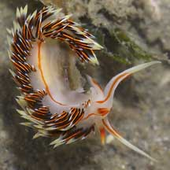
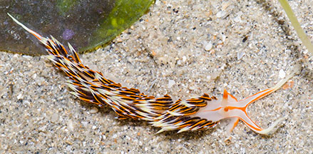

|
|
| nudibranchs text index | photo index |
| Phylum Mollusca > Class Gastropoda > sea slugs > Order Nudibranchia |
| Phidiana
nudibranch Phidiana militaris Family Facelinidae updated May 2020 Where seen? This pretty nudibranch is seldom seen, so far, on our Northern shores. Features: About 2cm long. Long, narrow, soft body with many long finger-like structures (called cerata) arranged in rows across the body. It is identified by the orange lines running along the side of the body over the head and along the long oral tentacles. The oral tentacles, the corners of the foot and rhinophores are tipped yellow and the oral tentacles have orange stripes. |
 Changi, Apr 05 |
 Changi, Apr 05 |
| Phidiana nudibranchs on Singapore shores |
On wildsingapore
flickr
|
| Other sightings on Singapore shores |
Links
|